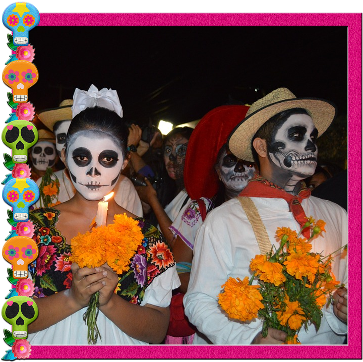

Day of the Dead
Día de Muertos
Día de Muertos is a celebration of the dead which begins October 31 and ends November 2. It includes three Christian feast days: All Hallow's Eve, All Saint's Day, and All Soul's Day.
- Mexican Instrumental Music - Day of the Dead
- 15 Traditional Day Of The Dead Recipes For Celebrating Día De Los Muertos!
- How to Make a Proper Altar For Day of the Dead Right Now
- How to Write Literary Calaveras for Día de los Muertos